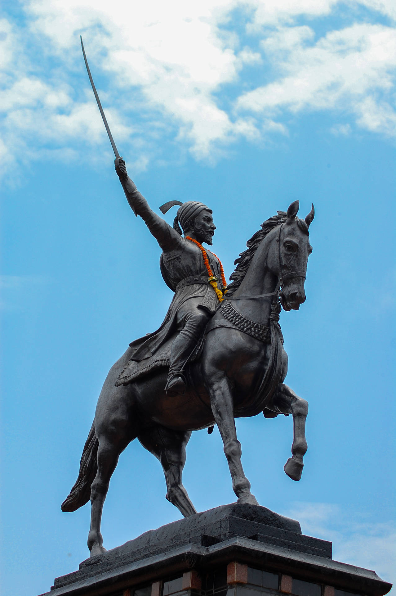

Multiple

Chhatrapati Shivaji Maharaj – Life Journey
- Birth: Born on 19th February 1630 at Shivneri Fort, Maharashtra. Parents: Shahaji Raje and Jijabai.
- Inspiration: Inspired by his mother Jijabai's stories of bravery and dharma. Took the Swarajya oath at Raireshwar Temple.
- Early Achievements: Captured Torna Fort at age 16 and started building his kingdom.
- Military Skills: Known for Guerrilla warfare tactics and smart strategies in battles.
- Major Events:
- Captured forts like Rajgad, Purandar, and Sinhagad.
- Attacked Shaista Khan in Lal Mahal, Pune.
- Escaped from Aurangzeb’s court in Agra using fruit baskets.
- Coronation: Crowned as Chhatrapati in 1674 at Raigad Fort, forming the Maratha Empire.
- Good Governance: Promoted justice, respected all religions, and protected common people and women.
- Legacy: Died in 1680. Remembered as a great warrior, wise ruler, and a national hero of India.

Chhatrapati Sambhaji Maharaj – Life Journey
- Birth: Born on 14th May 1657 at Purandar Fort, Maharashtra. Son of Chhatrapati Shivaji Maharaj and Maharani Saibai.
- Education: Highly educated; fluent in Sanskrit, Marathi, Persian, and other languages. Also known for his intelligence and bravery from a young age.
- Military Training: Trained in warfare, politics, and administration under the guidance of Shivaji Maharaj.
- Ascension to Throne: Became Chhatrapati in 1681 after the death of Shivaji Maharaj.
- Rule and Resistance:
- Fought bravely against the Mughal emperor Aurangzeb’s forces.
- Defended the Maratha Empire with strength and determination despite limited resources.
- Capture and Torture: Captured by Mughal forces in 1689 after betrayal. Refused to convert to Islam.
- Martyrdom: Brutally tortured and executed by Aurangzeb at the age of just 31, for standing strong in his faith and nation.
- Legacy: Remembered as a fearless and loyal Maratha warrior who chose death over dishonor.